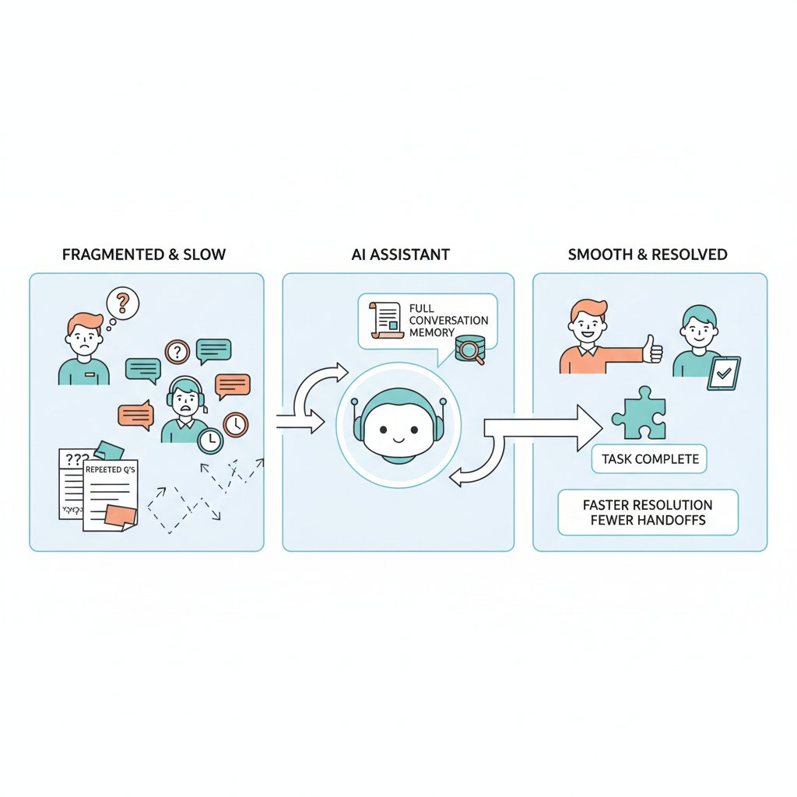
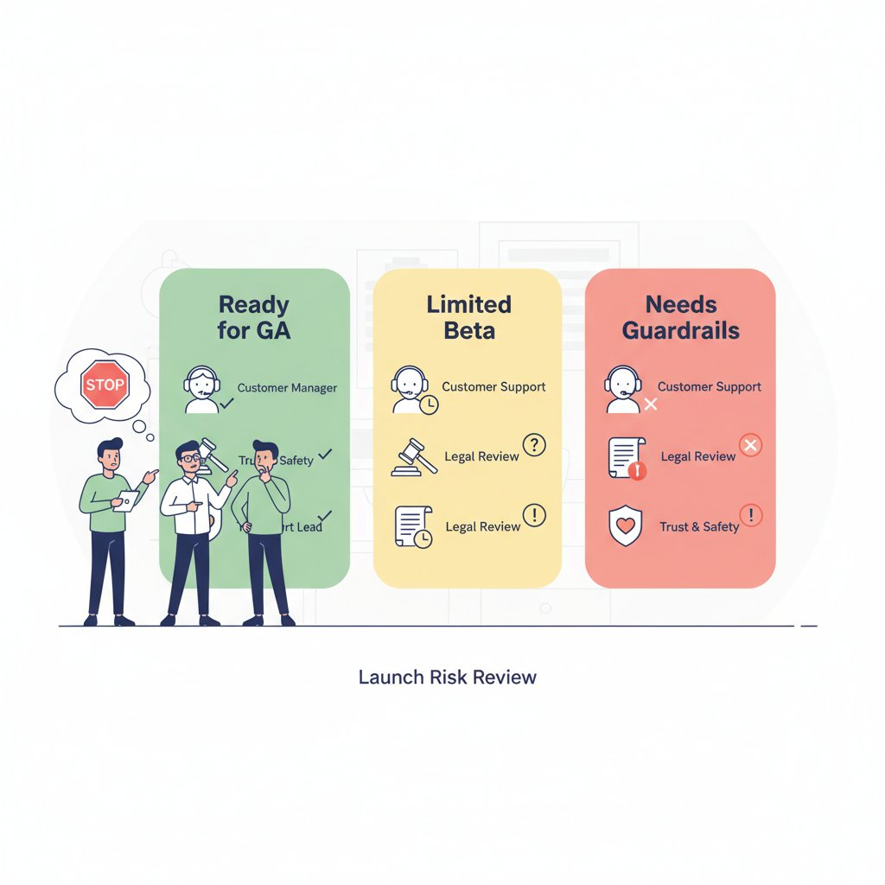
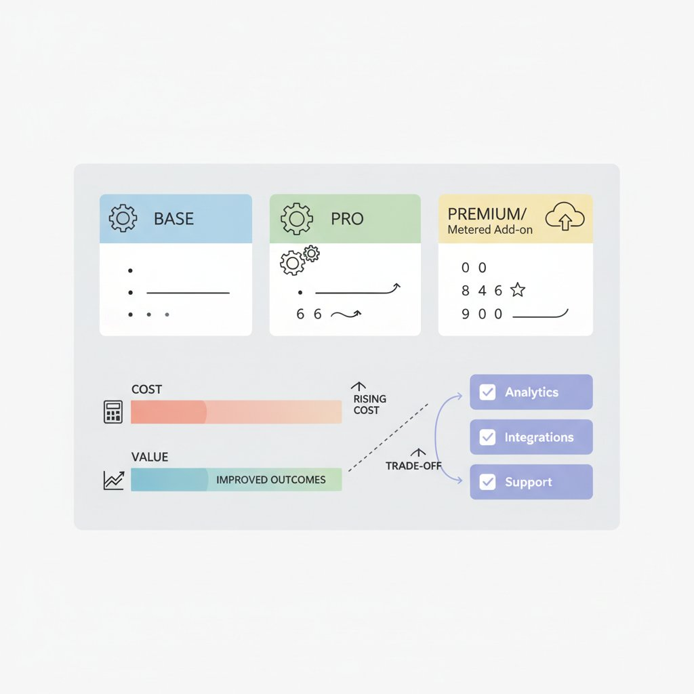

Think of this launch like upgrading the engine, dashboard, and fuel economy at once: the car still looks familiar, but it should handle more difficult trips with less effort. OpenAI says GPT-5.5 brings better context understanding, stronger coding and computer-use performance, and updated pricing and availability across ChatGPT, Codex, and the API (OpenAI). OpenAI also released a system card (a safety report that explains how the model was evaluated) and a bio bug bounty (a paid program for finding harmful biological misuse risks), which signals this is a more carefully documented launch than a pure marketing announcement (System Card; Bio Bug Bounty).
For product teams, the big shift is not just model quality — it’s what workflows you can now trust more often. A model upgrade means the underlying AI got better; a product capability shift means you can redesign user-facing flows, like letting ChatGPT draft longer customer-support replies or letting Codex handle more coding tasks with less hand-holding (OpenAI). That distinction matters because some claims are validated release facts, while others are still marketing language about “real work” and “a new class of intelligence” (OpenAI; The New Stack).
This release is a signal that the baseline is moving fast. If GPT-5.5 is already the new default in your stack, your roadmap may need a fresh look at accuracy thresholds, pricing, and safety reviews before you ship AI-dependent features (OpenAI; System Card).
Think of better context like a customer support rep who remembers the whole conversation, not just the last message. OpenAI says GPT-5.5 is better at maintaining context across longer interactions, which matters for multi-step work like support resolution, research, onboarding, and enterprise drafting (OpenAI). In plain English, context means the model can keep track of more of what the user has already said and done, so the output feels less like a series of disconnected replies and more like one continuous workflow.
Think of computer use like a capable assistant who can click through the same tools your team already uses. OpenAI’s GPT-5.5 release and system card (a safety and behavior report) position the model for stronger coding and tool-using workflows, including agent-like experiences in products such as ChatGPT and Codex (OpenAI, OpenAI). This means your team can build internal automation, customer-facing assistants, and ops tools that do more than draft text — they can help complete tasks, reduce human handoffs, and shrink time to resolution.

Better context and computer use turn AI into a workflow engine, not just a chatbot.
💡 What this means for you as a PM
Better context and computer use can turn AI from a novelty into a workflow engine, changing what users will pay for and expect. That affects your roadmap because success metrics shift from “did the model answer?” to task completion rate, deflection, time saved, and fewer escalations. The business trade-off is that once users trust the assistant more, failures become more visible and more damaging, so you need tighter review loops and clearer fallback paths.
For product teams, this usually means fewer prompt workarounds and more stable experiences in tools like Zendesk, Notion, Google Workspace, or Salesforce-style enterprise drafting flows. But when it goes wrong, you’ll see it as bad recommendations, broken automations, or support teams losing trust faster than before. That makes launch planning and quality bars more important, not less (OpenAI).
Think of a system card like a restaurant’s health inspection report: it tells you not just whether the kitchen can cook, but where it tends to slip under pressure. OpenAI says the GPT-5.5 system card covers safety, controllability, and real-world work use cases (plain English: how safely the model behaves, how well it follows instructions, and how it performs on tasks people actually do at work) (Source). That matters because a model can look strong in demos yet still create rollout risk in customer-facing workflows like support drafting, sales email generation, or coding copilots.

A system card helps teams decide whether to launch broadly, stage access, or add guardrails.
💡 What this means for you as a PM
A stronger safety process can speed launch confidence, but only if PMs build the right guardrails and escalation plans.
If the evaluation scope includes controllability and real work tasks, you can use that to decide whether a feature is ready for general availability (GA, meaning broad public release) or still needs a limited beta. This affects your roadmap because the business trade-off is not just model quality, but how much customer support, policy review, and incident response your team can absorb on day one.
Rollout should match the risk profile. If OpenAI’s findings show a model is strong but still has edge-case failure modes, PMs should prefer staged access, stricter prompts, human review for high-stakes outputs, and clear escalation paths for abuse or harmful responses (Source). The biosecurity bug bounty (a paid program for outside researchers to test dangerous misuse) is a signal that model launches now come with more explicit risk management, not just feature shipping (Source; Source). This means your team can launch faster only if support, legal, and trust-and-safety are ready in parallel.
When you communicate limits, frame them as product maturity, not product weakness. For example: “GPT-5.5 is better for real work, but we still route sensitive cases through review and monitor for failures,” rather than “the model may be unsafe” (Source). That keeps trust high while setting realistic expectations for customers using AI in revenue-critical workflows.
Think of pricing a new AI model like launching a faster delivery option at a restaurant: customers love the speed, but the kitchen has to afford it. OpenAI says GPT-5.5 is rolling out in ChatGPT and Codex, and the launch is being framed as a more capable model for “real work” and better context handling. That matters for roadmap prioritization because availability determines whether you can ship it as a broad default, a premium add-on, or a limited beta while you test demand and cost. (Source) (Source)
The business trade-off is simple: better outcomes can justify higher spend, but only if the margin still works. If GPT-5.5 reduces support tickets, manual review, or content QA, the ROI (return on investment, meaning the payoff versus the cost) can be strong even when inference cost (the cost of running the model for each request) is higher. But if your usage patterns are heavy or unpredictable, tighter usage limits (caps on how much customers can use it) may be necessary to protect gross margin (revenue left after direct costs). (Source)

PMs need to test packaging, pricing tiers, and ROI before making GPT-5.5 the default.
💡 What this means for you as a PM
If GPT-5.5 improves outcomes enough, it can justify premium pricing—but only if your unit economics still work. Revisit pricing tiers, usage caps, and feature gating (showing advanced features only to higher plans) before you promise “AI-powered” upgrades in your roadmap. Finance, sales, and customer success should align early so you don’t create a promise the product team can’t deliver profitably.
PMs should revisit packaging, not just capability. A stronger model can support premium positioning in products like Zendesk-style support workflows, Notion-like writing assistants, or Salesforce-style sales copilots if it cuts human effort or reduces escalations. That means your roadmap should test whether GPT-5.5 belongs in a higher-tier bundle, a metered add-on, or a workflow-specific feature where customers can see direct time savings. If it goes wrong, you’ll feel it as margin compression, surprise overages, or customer backlash over limits.
Think of a model upgrade like a new engine dropped into an existing car lineup: customers notice it first in the vehicles already on the road, not in a brand-new showroom model. OpenAI says GPT-5.5 is rolling into ChatGPT (the consumer chat app) and Codex (its coding tool), which is a strong signal that the first wins will show up inside products people already use rather than in a brand-new standalone launch (OpenAI).
That pattern matters because office-work and coding improvements are the quickest way to prove value. Early coverage says GPT-5.5 is better at handling context (the surrounding information needed to answer well), which should translate into fewer “what do you mean?” moments in document drafting, support workflows, and code generation (9to5Google; The New Stack). For consumer products, that means better answers; for developer products, it means more automation and less hand-holding in workflows like app building or debugging (9to5Mac).
💡 What this means for you as a PM
Watching where GPT-5.5 appears first helps PMs spot which product categories are most likely to shift next. If your roadmap touches chat, support, search, or developer tools, you should expect customer expectations to move fast once “better context” becomes table stakes. The business trade-off is that launch timing now depends on when model access, pricing, and safety checks are ready — not just when your feature code is done.
There are also availability differences that matter for launch planning and comms. OpenAI framed GPT-5.5 as an upgrade inside existing products, while reporting around the release suggests the rollout is being treated as part of a faster update cadence, which can make feature parity harder for competitors to maintain (OpenAI; Fortune). The product lesson is simple: model upgrades usually land first as platform leverage — they change what your team can build underneath, and only later become obvious end-user features.
Think of this like testing a newer engine in a fleet of delivery scooters: you do not swap every vehicle overnight, you first check which routes get faster and which ones get riskier. GPT-5.5 (OpenAI’s newer model) is positioned for better context handling (keeping more of the conversation and task in view) and more “real work” use cases, so the first move is to rank your highest-value AI workflows by where those gains would matter most. Focus on customer support, sales assist, document-heavy ops, and any workflow where the model must carry long context or use tools.
💡 What this means for you as a PM
The winners will be PMs who turn the launch into a measured experiment, not a rushed model swap.
Start by defining success metrics (numbers you’ll use to judge impact) like conversion, task completion, handle time, CSAT (customer satisfaction), or retained usage (whether people keep coming back). Then run controlled experiments (side-by-side tests on real customer tasks) against your current model so you can prove lift before you commit roadmap, budget, or customer messaging.
Use the next 30 days to build a go/no-go gate around rollout. That means reviewing pricing, support readiness, and launch communications before exposing customers to a higher-capability model that may also create higher costs or new failure modes. The business trade-off is simple: better performance can raise ROI (return on investment), but only if you avoid a fragile or expensive launch. If you cannot show meaningful gains on real tasks, or if support and cost targets break, keep GPT-5.5 in a limited pilot rather than making it the default.
The following sources were retrieved and used during research for this blog. All links are verified — none are invented.
> OpenAI announces GPT‑5.5 with improved context understanding, better performance on coding/computer use, and new pricing/availability details....
> System card for GPT‑5.5, covering safety evaluations, real-world work use cases, and risks measured for deployment....
> OpenAI launches a biosecurity bug bounty tied to GPT‑5.5 and its safety/security posture....
> Deployment Safety Hub entry with GPT‑5.5 safety and controllability evaluations....
> Reports OpenAI is rolling out GPT‑5.5 to ChatGPT users, highlighting improved context understanding and stronger coding/computer-use performance....
> Fortune reports on GPT‑5.5’s release and OpenAI’s faster AI update cadence....
> NYT coverage of OpenAI’s GPT‑5.5 release, noting stronger code and office-work tasks....
> Covers GPT‑5.5 rollout in ChatGPT and Codex, including pricing and availability....
> The New Stack covers GPT‑5.5 availability in ChatGPT/Codex and upcoming API pricing....
> Appwrite’s developer-focused review of GPT‑5.5 benchmarks, pricing, and deployment implications....
> Guide to GPT‑5.5’s context window, pricing, benchmarks, and security posture....
> Product Hunt launches Ask, an AI assistant that answers product questions using Product Hunt data....
> DeepSeek-V4 Preview claims a 1M-token context window and new MoE architecture....